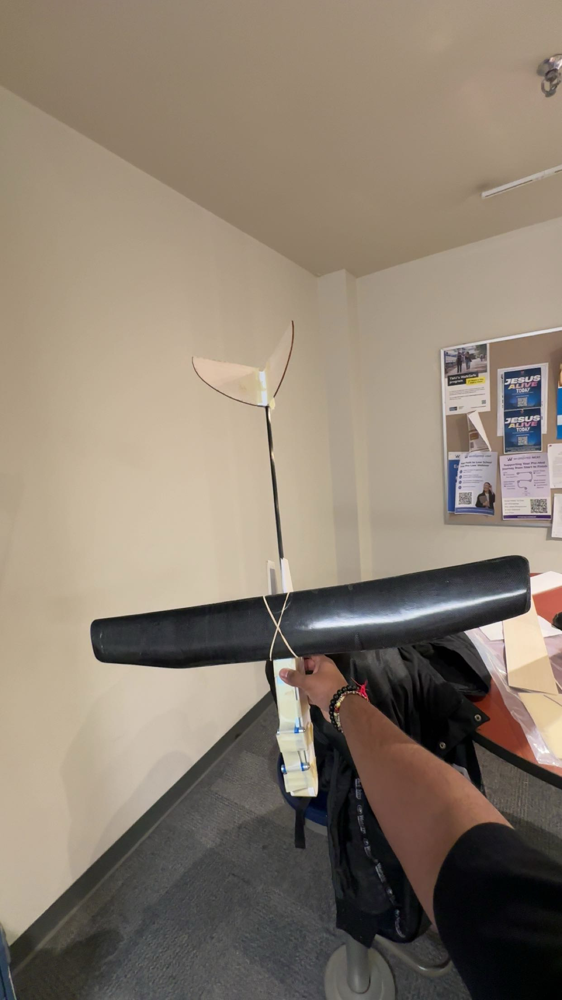
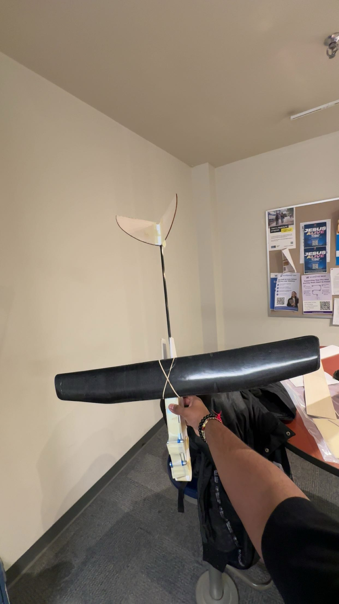

COMPETITIONS
Astralis: The Future Of Space Robotics
CASI TMU Branch 2025

As part of a three-member team, I competed in the Astralis: Future of Robotics competition, hosted by CASI TMU, where we were tasked with addressing the increasingly urgent issue of space debris accumulation in orbits such as LEO (Low Earth Orbit) and GEO (Geostationary Orbit).
Given just 12 hours, our challenge was to develop a comprehensive mitigation strategy following a hypothetical debris-generating collision in GEO. Our proposed solution focused on immediate risk reduction, advanced debris tracking and avoidance, and a sustainable legal and policy framework.
Our concept involved deploying a network of orbit-based sensor modules to create a real-time data-sharing infrastructure capable of continuously monitoring the position and velocity of debris. This data would be integrated into a centralized platform to support autonomous collision avoidance systems and long-term orbital traffic management.
My teammates, Mahishan Raveendran and Ved Patel, and I worked collaboratively under tight time constraints to conduct technical research, synthesize legal-policy frameworks, and deliver a high-impact presentation. We pitched our solution to industry professionals and judges from organizations such as MDA Space, Rocket Lab, and NordSpace. This experience pushed the boundaries of our problem-solving, rapid prototyping, and teamwork skills.
CATIA C3 Aerospace Design
1st Place - Senior Category

As part of a three-member team, I competed in the CATIA C3 2025 Aerospace Design Competition hosted by the Toronto Metropolitan Aerospace Course Union (ACU), where we secured 1st Place in the Senior Category for our innovative long-endurance glider design, Galforce. The challenge required participants to conceptualize and model a propulsion-free, 3-meter wingspan glider within an 8-hour time limit using CATIA V5, targeting applications in atmospheric and climate research.
Our objective was to create a robust, modular glider capable of sustaining flight in extreme environments while optimizing aerodynamic efficiency and payload adaptability. I led the design of the fuselage and modular payload bay, selecting carbon-fiber-reinforced composites to minimize weight while protecting scientific instruments.
My teammates, Arshan Thuraiappah and Sakif Khandaker, contributed by engineering high-aspect-ratio wings for lift optimization and a stabilized tail assembly with integrated landing gear for diverse launch conditions.
This project challenged us to balance structural integrity, aerodynamic performance, and real-world mission adaptability under time constraints. The collaborative design process, rapid iteration in CATIA, and systems-level thinking made this a defining experience in aircraft conceptual design.
AER507 Glider Competition
Design, Manufacturing & Flight


 

The goal of this project was to design and construct a glider aircraft that is capable of flying the furthest possible distance while weighing the least amount possible. The materials were provided in advance during lab sessions, along with the mould for the NACA M22 airfoil that was used to manufacture the actual wing.
All of the components other than the wing were designed using a CAD program and manufactured using processes such as laser cutting and 3D printing. Materials were chosen to optimize both weight and durability of the design.
Several requirements had to be met: the final design length had to be under 29.5 inches, fuselage width under 2 inches, and tail fin area less than 30% of the wing area.
The competition scored designs based on the glide distance divided by the final weight. Our final glider successfully survived all three flight attempts, demonstrating the effectiveness of our manufacturing process. The final design balanced structural integrity with aerodynamic efficiency.